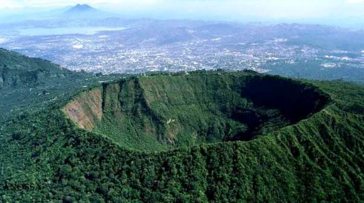
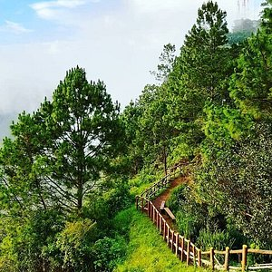
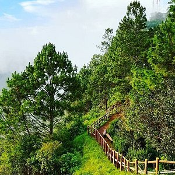
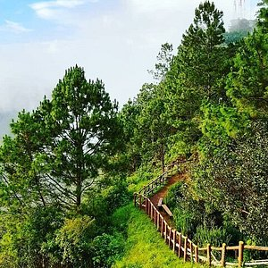

 



El Parque Nacional El Boquerón es un área natural protegida administrado por CORSATUR, el cual está ubicado en la cima del volcán de San Salvador, aproximadamente 1,950 (m. s. n. m.) y la temperatura en ese lugar varía de 18 a 22 grados centígrados durante el día y desciende hasta los 12 u 8 grados centígrados durante la noche.

con un clima agradable haci se destaca el boqueron. con una vista tan impresionante hacia el crater y una gastronomia impresindible para pasar un buen viaje junto a la famila.
